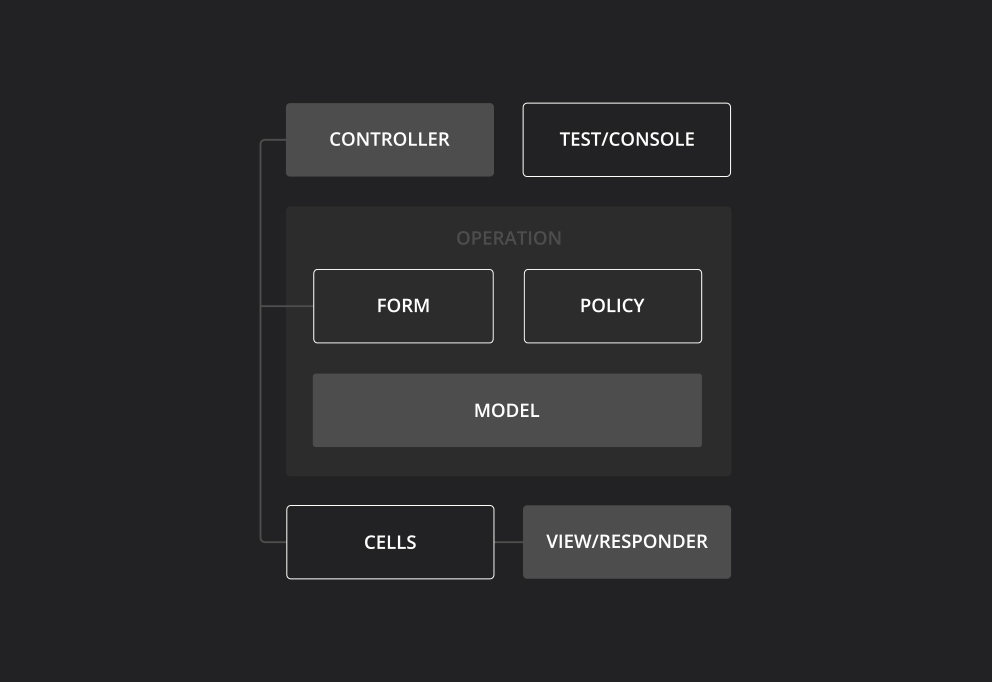

Trailblazer
Trailblazer gives you a high-level architecture for web applications.
Logic that used to get violently pressed into MVC is restructured and decoupled from the Rails framework. New abstraction layers like operations, form objects, authorization policies, data twins and view models guide you towards a better architecture.

By applying encapsulation and good OOP, Trailblazer maximizes reusability of components, gives you a more intuitive structure for growing applications and adds conventions and best practices on top of Rails’ primitive MVC stack.
A polymorphic architecture sitting between controller and persistence is designed to handle many different contexts and helps to minimize code to handle various user roles and edge cases.
Controller
Controllers in Trailblazer end up as lean HTTP endpoints: they instantly dispatch to an operation.
No business logic is allowed in controllers, only HTTP-related tasks like redirects.
class CommentsController < ApplicationController
def new
form Comment::Update
end
def create
run Comment::Update do |op|
return redirect_to comments_path(op.model)
end
render :new
end
class Comment < ActiveRecord::Base
has_many :users
belongs_to :thing
scope :recent, -> { limit(10) }
end
Model
Models only contain associations, scopes and finders. Solely persistence logic is allowed.
That's right: No callbacks, no validations, no business logic in models.
Operation
Per public action, there's one operation orchestrating the business logic.
This is where your domain code sits: Validation, callbacks, authorization and application code go here.
Operations are the only place to write to persistence via models.
Learn more
class Comment::Create < Trailblazer::Operation
contract do
property :body
validates :body, length: {maximum: 160}
end
def process(params)
if validate(params)
else
end
end
end
contract do
property :body
validates :body, length: {maximum: 160}
property :author do
property :email
validates :email, email: true
end
end
Form
Every operation contains a form object.
This is the place for validations.
Forms are plain Reform classes and allow all features you know from the popular form gem.
Forms can also be rendered using form builders like Formtastic or Simpleform.
Callback
Callbacks are invoked from the operation, where you want them to be triggered.
They can be configured in a separate Callback class.
Callbacks are completely decoupled and have to be invoked manually, they won't run magically.
callback do
on_create :notify_owner!
property :author do
on_add :reset_authorship!
end
end
policy do
user.admin? or not post.published?
end
Policy
Policies allow authentication on a global or fine-granular level.
Again, this is a completely self-contained class without any coupling to the remaining tiers.
View Model
Cells encapsulate parts of your UI in separate view model classes and introduce a widget architecture.
Views are logic-less. There can be deciders and loops. Any method called in the view is directly called on the cell instance.
Rails helpers can still be used but are limited to the cell's scope.
class Comment::Cell < Cell::ViewModel
property :body
property :author
def show
render
end
private
def author_link
link_to "#{author.email}", author
end
end
<div class="comment">
<%= body %>
By <%= author_link %>
</div>
<h1>Comments for <%= @thing.name %></h1>
This was created <%= @thing.created_at %>
<%= concept("comment/cell",
collection: @thing.comments) %>
Views
Controller views are still ok to use.
However, replacing huge chunks with cells is encouraged and will simplify your views.
Representer
Document APIs like JSON or XML are implemented with Representers which parse and render documents.
Representers are plain Roar classes. They can be automatically infered from the contract schema.
You can use media formats, hypermedia and all other Roar features.
representer do
include Roar::JSON::HAL
property :body
property :user, embedded: true
link(:self) { comment_path(model) }
end
class Comment::Update < Create
policy do
is_owner?(model)
end
end
Inheritance
Trailblazer reintroduces object-orientation.
For each public action, there's one operation class.
Operations inherit contract, policies, representers, etc. and can be fine-tuned for their use case.
Polymorphism
Operations, forms, policies, callbacks are all designed for a polymorphic environment.
Different roles, contexts or rules are handled with subclasses instead of messy ifs.
class Comment::Create < Trailblazer::Operation
build do |params|
Admin if params[:current_user].admin?
end
class Admin < Create
contract do
remove_validations! :body
end
end
File Layout
In Trailblazer, files that belong to one group are called concepts. They sit in one directory as Trailblazer introduces and new, more intuitive and easier to navigate file structure.
app
├── concepts
│ ├── comment
│ │ ├── crud.rb
│ │ ├── cell.rb
│ │ ├── views
│ │ │ ├── show.haml
│ │ │ ├── list.haml
│ │ │ ├── comment.css.sass
│ │ └── twin.rb
│ │
│ └── post
│ └── crud.rb
Gems
Trailblazer is an architectural style. However, what sounds nice in theory is backed by gems for you to implement that style.
The gems itself are completely self-contained, minimalistic and solve just one particular problem. Many of them have been in use in thousands of production sites for years.
All gems are documented here.